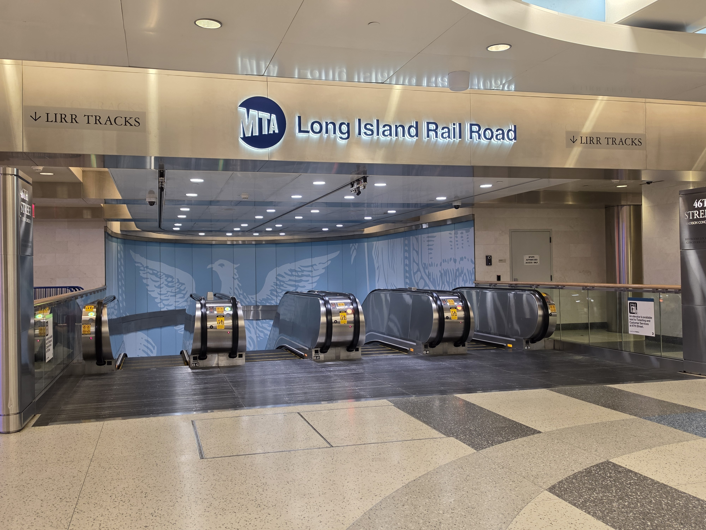
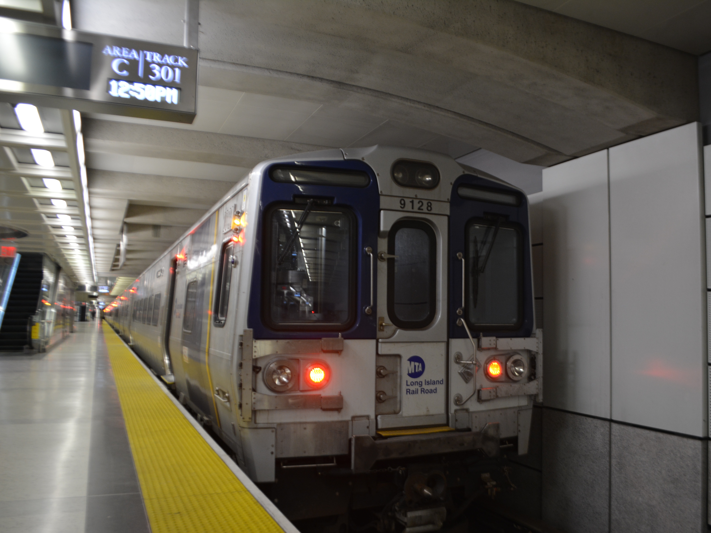
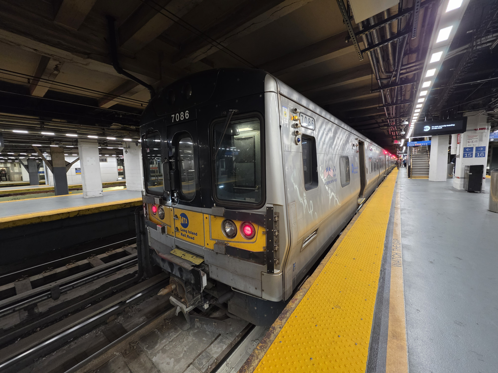
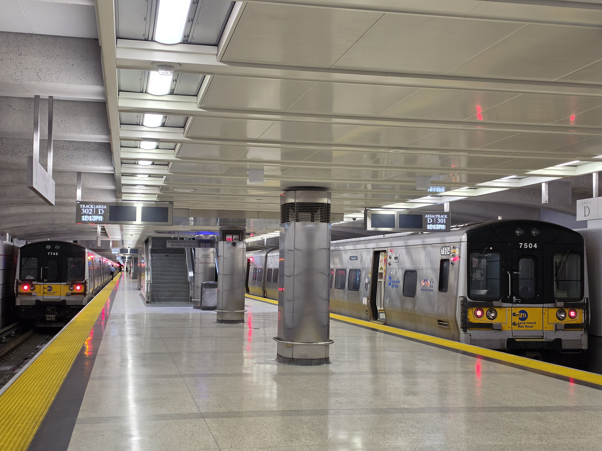
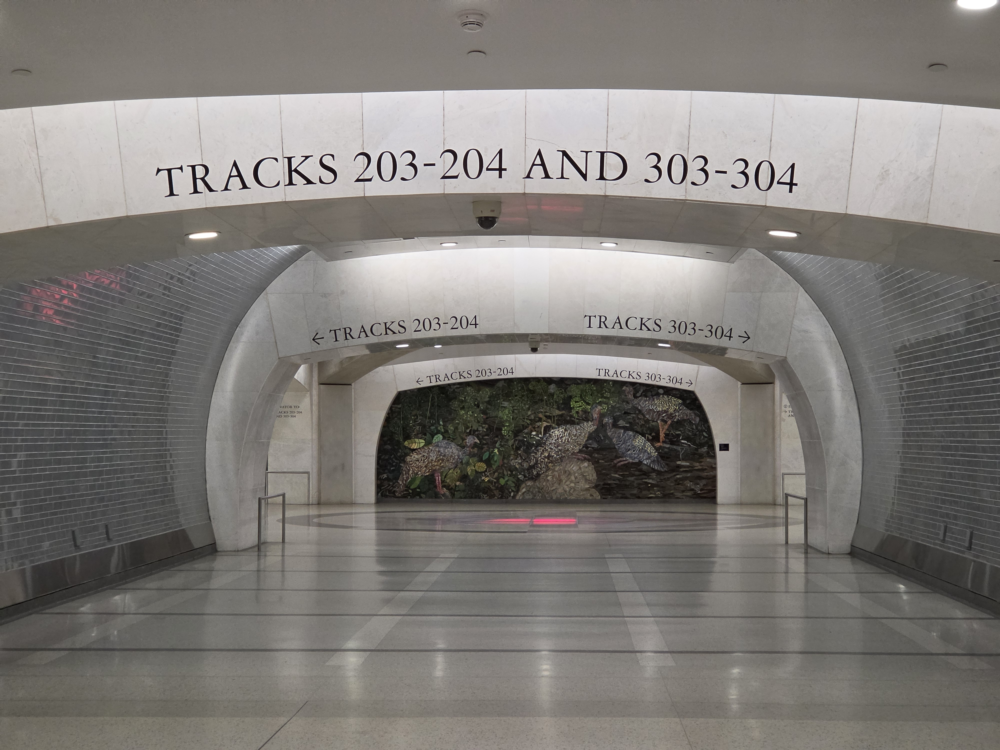

Why Transit Matters To Me
Two main reasons.
1: To showcase my love for transit. Transit is one of my favorite modes of getting around.
While there are flaws within the transit system, it still is one of the most convenient ways to navigate your trips!
2: My dual intriusion of Grand Central. The famous terminal itself, and its new LIRR Sibling.

Why Does Grand Central Madison Matter?
To showcase the benefits of using the Grand Central Station to get around the city.

Common Misconceptions
Many commuters find this station gigantic, confusing, and difficult to navigate.
Many claim your brought to the middle of nowhere, and Grand Central barely offers benefits compared to Penn Station.
Many poke fun of Grand Central Madison being a mega-billion dollar bondoggle as its huge costs to low passenger count sticks out.
Many are enraged with the service patterns Grand Central caused, especially the banishment of through-Brooklyn service.
The Reality
While it may be huge and unfamiliar and a big change, I seek to help overcome the complex and its challenges!
By showing the benefits, getarounds, and tricks to navigating the complex, Grand Central will become much less scary!
I also want to show how to get to some attractions and places, that one would typically do from Penn Station.

The Benefits?

Some benefits to using Grand Central over Penn Station include:
Faster Access towards the East Side of Manhattan
Less Passenger Congestion and Crowding compared to Penn Station
Some places actually being faster to reach from Grand Central than Penn
Cleaner, newer, modern infrastructure
Some Helpful Links
Below, I have attached some links to help you learn more about this interesting station, as well as navigation tips and tricks, and a few links for research purposes.
Plan Your Visit
View The Long Island Rail Road Schedules To Plan A TripView This Helpful Map Diagram Of Grand Central Madison.
Learn more about Grand Central: Station Info and History!
View The Long History of Grand Central MadisonView A Map Diagram of the entire Grand Central Terminal
View this page showcasing the need to knows of Grand Central Madison